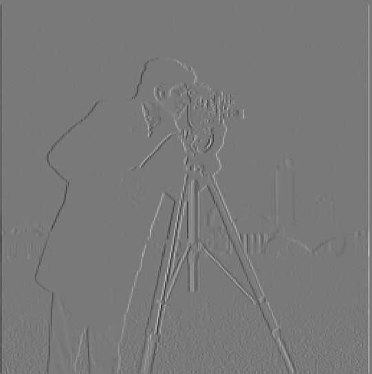
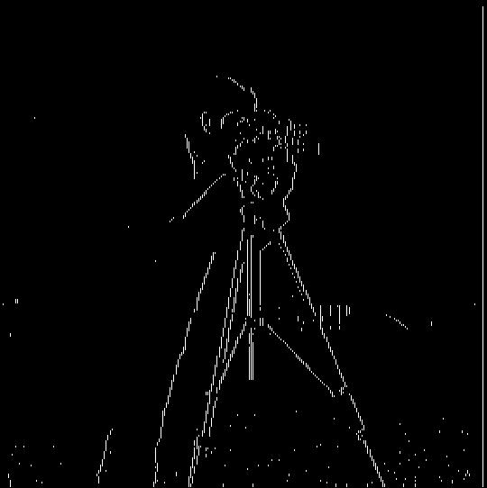
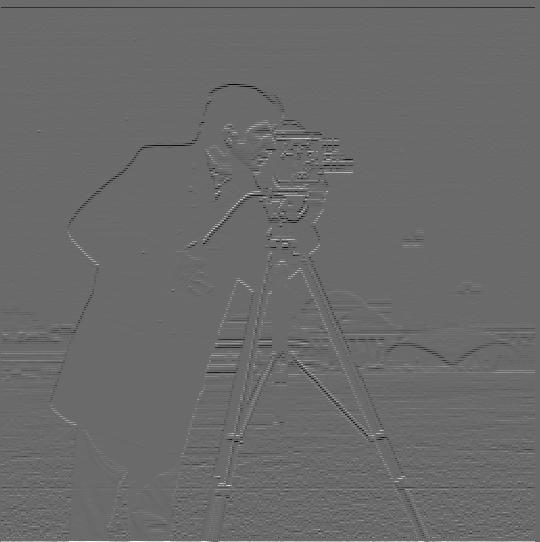
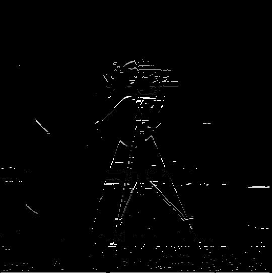
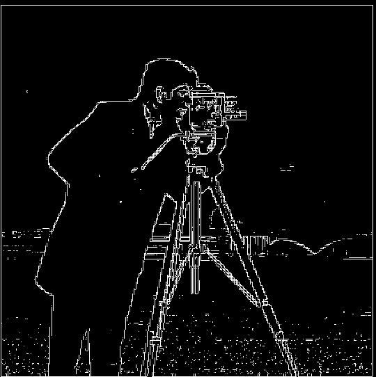
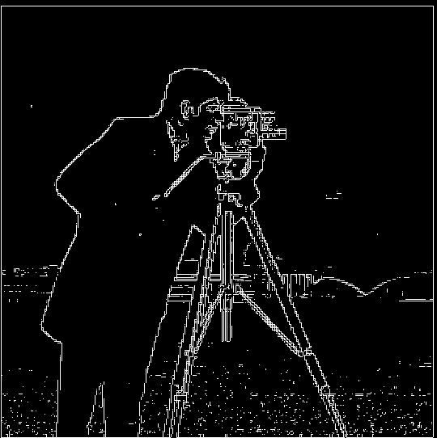

Convolutions of cameraman.jpg with Dx, Dy, and gradient magnitude filters
im, we use scipy.signal.convolve2d(im,Dx,mode='same',boundary='symm') in order to compute the convolution of our image with some filter. Observe that \(f\star D_x\) can detect vertical edges, while \(f\star D_y\) can detect horizontal edges. Finally, in order to find the gradient magnitude image, we simply compute \(\sqrt{(f\star D_x)^2 + (f\star D_y)^2} \).
Original image



Dy filter


Gradient Magnitude Image
 
